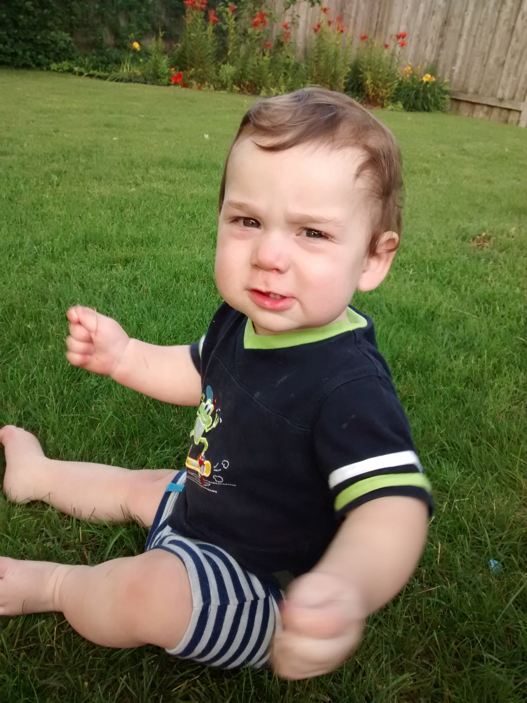

ugens begivenhed
ugens foto
hent fotoarkiv

James fyldte 9 maaneder soendags men det var ikke den eneste maerkedag. Desvaerre var James ikke i stand til at overbringe en hilsen personligt, saa derfor valgte vi at finde flaget frem for at markere dagen for baade farfar og morfar.